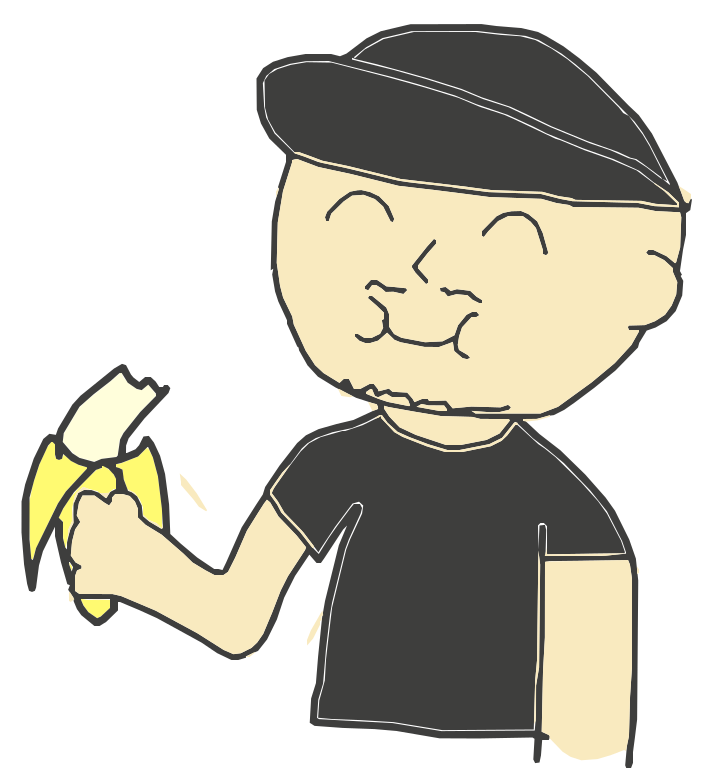
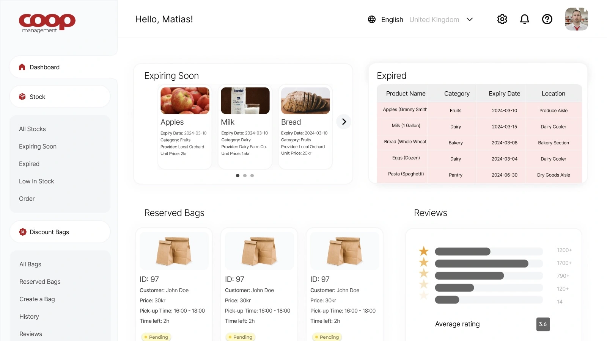
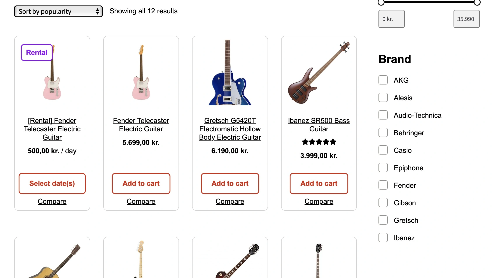
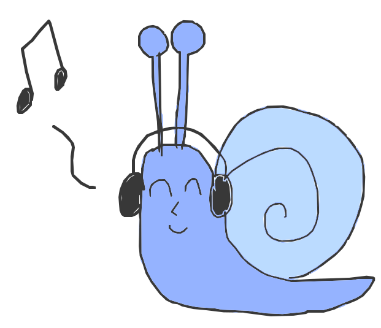
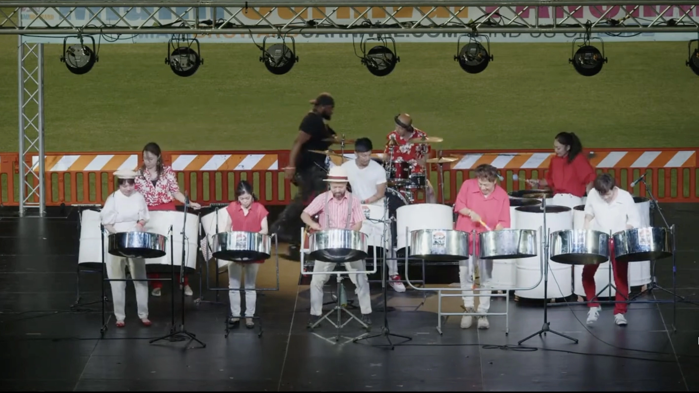
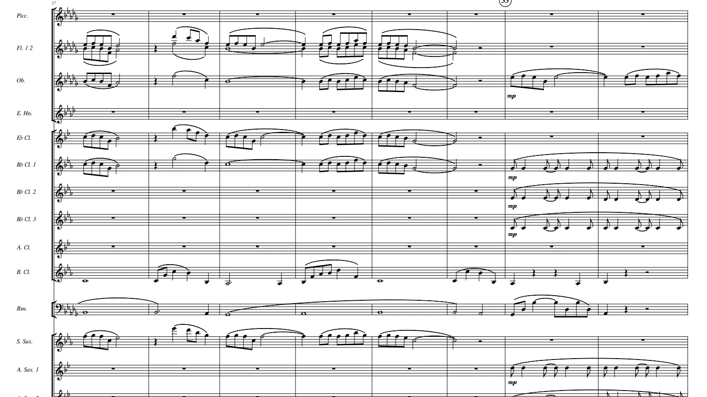
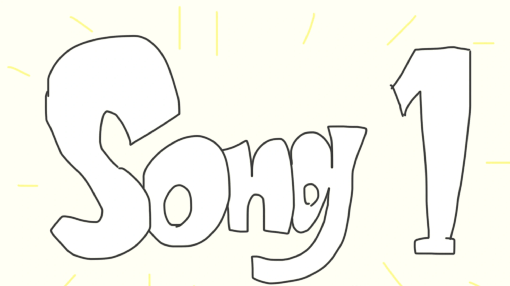
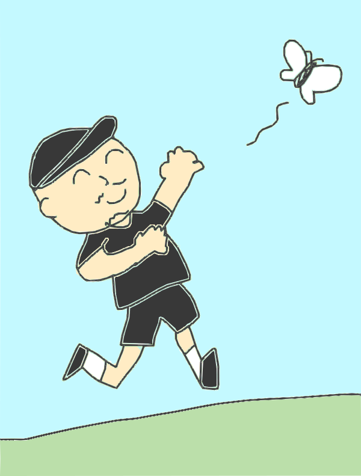
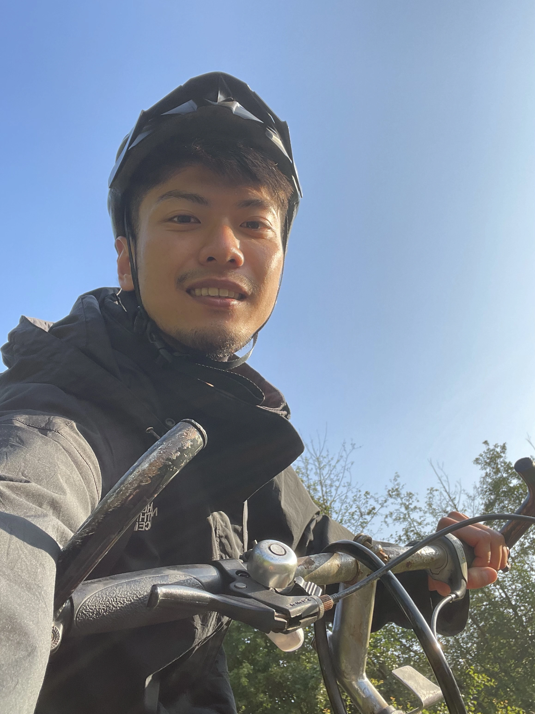
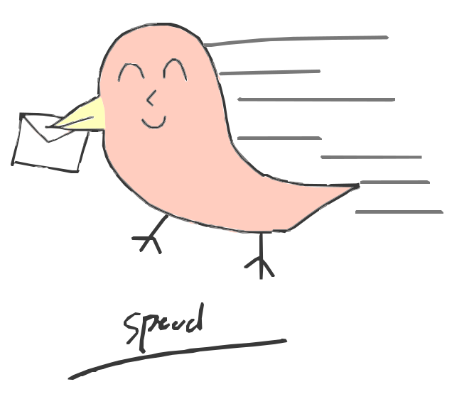

Dialog på Tværs (ongoing project)

Working to adhere to WCAG 2.2 guidelines while maintaining visual aesthetics and the overall theme.
See the project detail of Dialog på TværsI’m an inclusive multimedia designer, intersectionalist, percussionist.

I care about the accessibility and usability of my products. I use various research and testing methods to create better designs for everyone. I am also working to meet WCAG 2.2 compliance in each project.
Working to adhere to WCAG 2.2 guidelines while maintaining visual aesthetics and the overall theme.
See the project detail of Dialog på Tværs
A web app that prevents food waste from supermarkets. Focused on user research and testing.
See the project detail of Coop Management
An e-commerce case study of a fictional online store, with a focus on general usability.
Visit MusicMania (external link)I play percussion and Steelpan and compose music. I also arrange music for wind orchestra in my spare time.


I was invited to perform at Miami Carnival Panorama 2022 as a member of Waiwai Steel Band
Read the article about Miami Carnival (external link)
I created several wind orchestra arrangements and scores under the name iwosushi from 2016 to 2018.
See all my orchestration works (external link)
Very very good song by me
Listen to Song 1 (external link)Born and raised in Tokyo, Japan. After studying Science Engineering at Hosei University in Tokyo, went to Den Internationale Højskole in Helsingør for a half year to learn about cultural differences and intersectionality.
Currently studying Multimedia Design at Erhvervsakademi Aarhus, with a focus on inclusivity and accessibility.
Steelpan player and a former member of Waiwai Steel Band Participating in various volunteer activities while working as a substitute teacher at a kindergarten.
Student member of International Association of Accessibility Professionals (IAAP)
Very very good at drawing (very very good).


